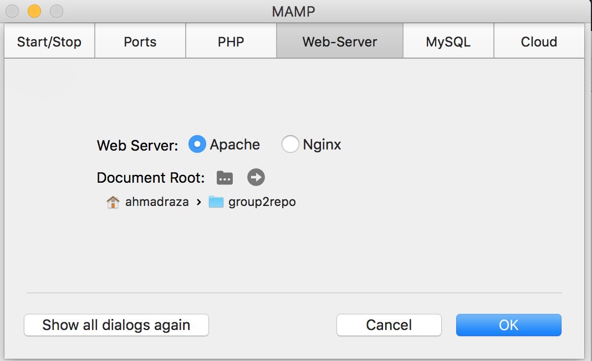
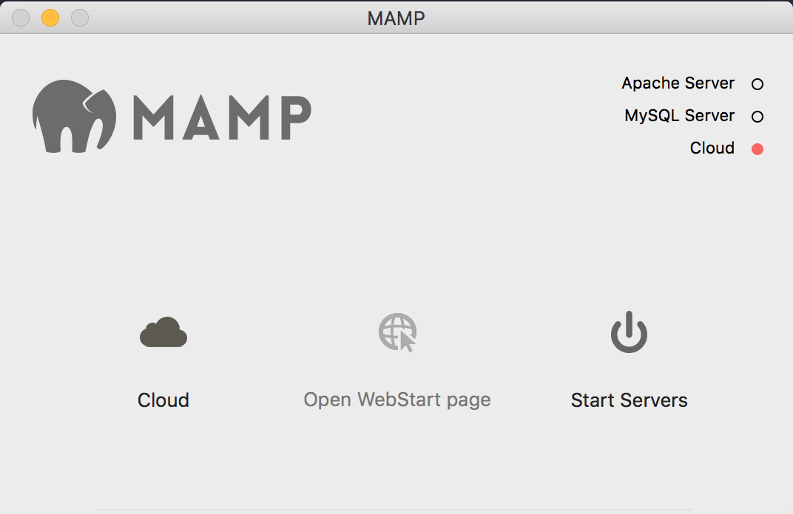
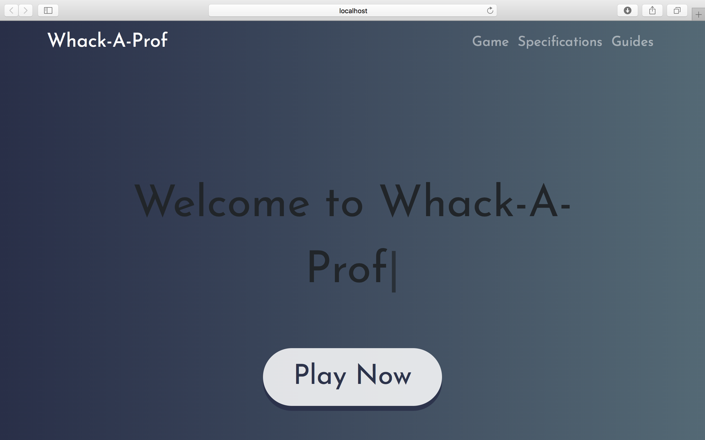

Testing the Project
Purpose: This document will guide you through setting up a web server in order to test the files in
your local repository. You cannot run them individually and must setup a server.
Linux
I’m assuming you know what you’re doing so I won’t make a guide unless it's completely necessary. Any Youtube
video should suffice. Basically, you will setup an Apache server and redirect the
Document Root to your local repository folder.
Windows / Mac
- Go to the
MAMP website and download then install the latest version of MAMP.
- After installing MAMP, run it and go into the settings. Under the Web-Server tab, click on the little
folder icon with the dots next to the Document Root option and select the path where your local
group2repo folder is setup. In my case, it's in the Downloads folder. Click "OK" after you’re
done.

- Run the Apache server in MAMP by clicking the “Start Servers” button.

- It should automatically open a webpage upon starting the servers. Click on the “My Website” option in
the navigation bar to view the project. If it doesn’t, simply go
here to run the website.
